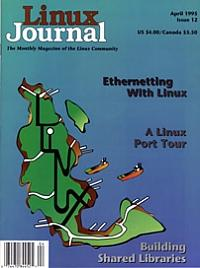

Shutdown Archive web server
Search:
Linux Journal
Issue #12/April 1995

Features
Linux: It's Not Just for Intel Anymore
by Joseph L. Brothers
A Linux Port Tour: Taking Linux Beyond its Intel-Processor-Based Beginnings
Leviathon
by Paul M. Sittler
Accessing On-Line Information through Linux.
Ethernetting Linux
by Terry Dawson
Connecting Linux to an Ethernet Network
Building Shared Libraries
by Eric Kasten
Understanding and Building a Linux Shared Library System.
News & Articles
What's GNU?
Plan 9 Part II
by Arnold Robbins
Cooking with Linux
by Matt Welsh
Kernel Korner
: The ELF Object File Format: Introduction
by Eric Youngdale
Mr. Torvalds Goes to Washington
by Kurt Reisler
Reviews
Product Review
InfoMagic
by Caleb Epstein
Product Review
Xfig
by Robert A. Dalrymple
Book Review
A Quarter Century of Unix
by Peter H. Salus
Book Review
The Mosaic Handbook for the X Window System
by Morgan Hall
Columns
Letters to the Editor
Novice to Novice
Linux Installation and X-Windows
by Dean Oisboid
New Products
System Administration
Setting Up Services
by Mark F. Komarinski
Archive Index
Shutdown Archive web server
Search:
Copyright © 1994 - 2018
Linux Journal
. All rights reserved.